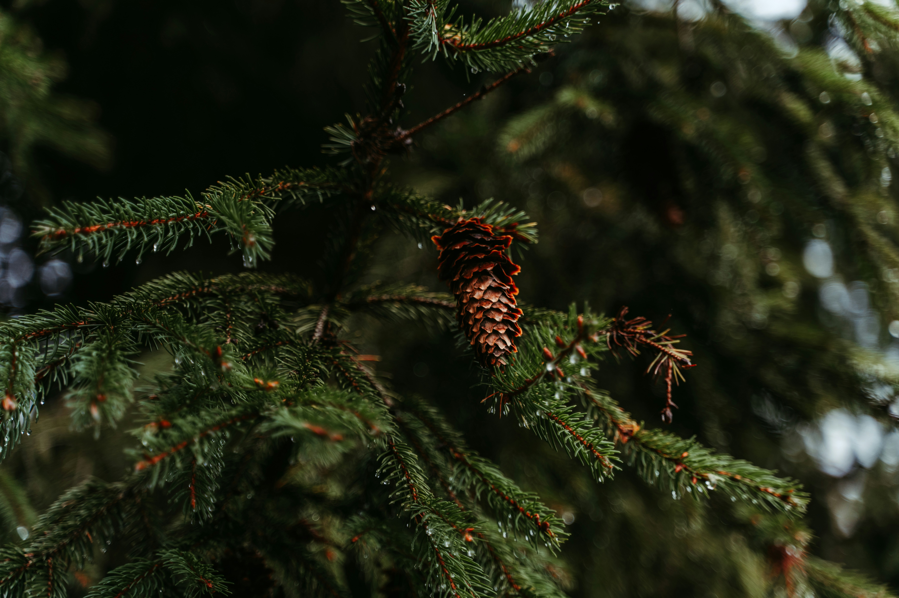

Ein Wald ist ein Stück Land, auf dem viele Bäume stehen. Es gibt viele verschiedene Arten von Wald, darum ist auch nicht immer deutlich, was ein Wald genau ist. Ein Wald sollte eine gewisse Größe haben, die Bäume sind eher hoch, und es sollte zwischen den Bäumen nicht zu große Lücken geben.

Bild von Polina Kuzovkova auf Unsplash
Wälder wachsen überall dort, wo genug Regen fällt. Außerdem darf es nicht zu kalt sein. Darum findet man Wälder weder in heißen, trockenen Wüsten noch in der Nähe von Nordpol und Südpol oder in den höchsten Gebirgen.
Wer Wälder in Arten einteilt, denkt vor allem an die Bäume, die dort wachsen. Bei uns in Mitteleuropa unterscheidet man zwischen Nadelwäldern mit Nadelbäumen und Laubwäldern mit Laubbäumen. In einem Mischwald stehen immer mindestens zwei verschiedene Baumarten: Dabei kann es sich um verschiedene Nadelbäume, um verschiedene Laubbäume oder auch um eine Mischung aus Nadel- und Laubbäumen handeln.
Wälder sind Erholungsgebiete, Touristen wandern gern in ihnen. Forstleute haben den Beruf, darauf zu achten, dass im Wald alles in Ordnung ist. Sie schlagen auch Bäume und sorgen dafür, dass junge Bäume nachwachsen.
Ein Urwald ist in der Natur gewachsen, ohne dass Menschen etwas dazu getan haben. Die Menschen haben ihn auch nicht verändert, also zum Beispiel keine Bäume abgeholzt und neue gepflanzt. Solche Urwälder gibt es in Europa nur noch ganz wenige. Der größte liegt im Bialowieza-Nationalpark in Polen. Allerdings ist er auch gerade bedroht. Es gibt noch einige weitere, kleinere Urwälder in Europa, auch in deutschsprachigen Ländern. Zum Teil wurden sie durch die Menschen kaum verändert, zum Teil ließ man aber auch veränderte Wälder wieder der Natur. So werden mit der Zeit daraus wieder richtige Urwälder.
In Wäldern leben viele Tiere, bei uns auch einige große wie Rothirsche und Elche. Die meisten Waldtiere sind aber eher klein. Für manche ist der Wald so wichtig, weil sie auf einem Baum leben oder dort ihre Nester haben. Andere leben im Gestrüpp und Unterholz.